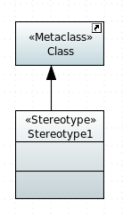
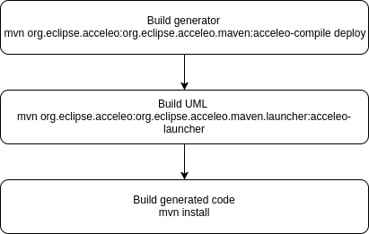
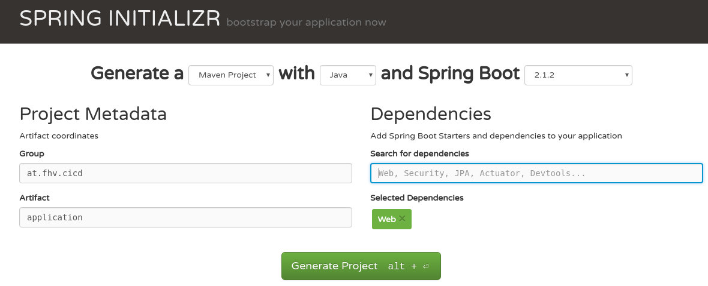
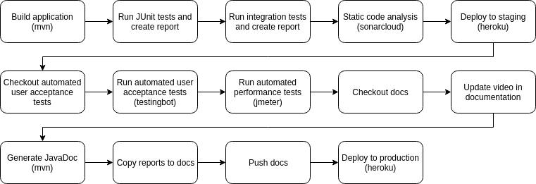
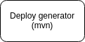

Sentiment Analysis Documentation
Introduction
This documentation is part of the sentiment analysis example project for the course "Software quality and lifecycle" at the University of Applied Sciences Vorarlberg
This documentation is to help you to setup an Acceleo project with a continuous delivery pipeline using the sentiment analysis demo application.
Getting Started #back to top
Before we start with creating an application you have to setup the workstation with the required IDE and Plugins in order to start development.
Download Eclipse
1. Download the latest Eclipse Modeling Tools2. Extract the package
3. Start the Eclipse application
Install the necessary Eclipse Plugins
1. Open the Eclipse application2. Go to Help - Install Modeling Components
3. Select "Acceleo" and "Papyrus"
4. Press "Finish" to start the installation
5. Follow the installation instructions and restart Eclipse afterwards
6. Go to Help - Eclipse Marketplace
7. Search for "maven"
8. Install "Maven Integration for Eclipse (Luna) 1.5"
9. Restart Eclipse to apply the changes
How to setup a project#back to top
Papyrus UML project #back to top
1. Open Eclipse2. Create a new Papyrus project (File - New - Other - Papyrus Project)
3. As Archtecture Context select UML
4. Define a project name and press "Finish"
5. Open the Papyrus perspective
6. Double click on the diagram and create a new UML class diagram (in the Model Explorer - Right Click - New Diagram - Class diagram)
7. Add UML and Java Primitive data types (in the Model Explorer - Right Click - Import - Import Registered Package - select JavaPrimitiveTypes and UMLPrimitiveTypes - Press "Import all")
8. Right click on the Papyrus project and create a new Papyrus Model
9. Select Profile
10. Open the newly created profile model and add a Profile diagram (in the Model Explorer - Right Click - New Diagram - Profile diagram)
11. Link the Pofile diagram in the UML diagram (Open the UML diagram - open the Properties View - Profile - Add Profile - Select your profile - Press "Select all")
12. Create a new Stereotype

The Metaclass defines on which type (class, attribute, operation, ect) you can apply your custom stereotype. The stereotype itself can contain properties which can be set in the class diagram when the stereotype gets applied. The metaclass and the stereotype are linked with the "Extension" edge.
Maven configuration #back to top
The maven build cycle looks as followed:
At first we have to build the Acceleo generator, second we use the generated generator to load the UML model and to generated the source code of the application out of it. Last we build the generated application in order to start it.
For a configuration example see the demo project (transformator, uml, application)
Application template #back to top
Before we are able to generate the code we need a project where the generated code will be put to. For this an empty Spring Boot application has been set up using the Sprint Initializr.
The only dependency needed for this example application is the "Web" dependency.
Sentiment Analysis#back to top
Project description #back to top
This project demonstrates the usage of code generation from UML diagrams using Acceleo and publishing the content with a continuous integration and continuous delivery pipeline to ensure the quality of the product.Try the application: The project is separated into the following sub projects:
- application

- The application is generated by Acceleo and enriched by custom business logic. It contains a HTML user interface which is connected via REST services to the backend. The project contains unit and integration tests which will be executed with each push to the master.
- docs

- Documentation of the project inlcuding static documentation for the project setup and general description as well as generated documentation coming from the different CI/CD pipelines of individual projects.
- transformator

- This project contains the Acceleo code for generating a Java application using an UML diagram.
- tests

- Automated user acceptance tests written in Selenium.
- uml

- UML diagrams used for generating the application.
Used technologies and cloud services #back to top
The following technologies and cloud service are used for this project (all of them provide a free tier for developers):- Acceleo
- Generate source code from UML diagrams
- Papyrus
- Eclipse plugin for creating UML diagrams
- GitHub
- Source control management
- Travis CI
- CI/CD pipeline
- SpringBoot
- Framework for fast application implementation
- Heroku
- Deployment and staging of the application
- PackageCloud
- Private maven repository
- SonarCloud
- Static code analysis with SonarQube
- Selenium
- Automated UI and integration testing
- TestingBot
- Automated Selenium UI tests and video recording
- Indico
- Webservice for sentiment analysis
- Draw
- Draw diagrams online
Walk through video #back to top
CI/CD Pipeline #back to top
The following pipelines got implemented in Travis CI (all of them will start after each push to the master branch):application pipeline:

transformator pipeline:

uml pipeline:
UML diagrams #back to top
The class diagram used for generating the backend:
- AnalysisEndpoint
- Contains operations for analyzing a text and return the sentiment for it
- HistoryEndpoint
- Contains operations for the analysis history for each user
- AuthEndpoint
- Contains operations for user login and logout
- AnalysisHandler
- Business logic for executing the sentiment analysis with a webservice call to indico.io
- HistoryHandler
- Business lgoic for adding and loading analysis history
- AuthHandler
- Business lgoic for handling user login and logout
- User
- Represents a single user which uses the system
- History
- Represents the history for a specific user
- HistoryItem
- Single history item which contains a single analysis with the text and the result
- SentimentResult
- Represents a single result of a sentiment analysis of a given text
The following stereotypes are used to specify the correct generator for the class:
 The stereotypes are used to use different generators for different classes in the UML diagram.
The stereotypes are used to use different generators for different classes in the UML diagram.Description of the stereotypes:
- Endpoint (class)
- This will generate a REST endpoint in Springboot
- Handler (class)
- This will generate a simple class which holds the business logic of the application
- Model (class)
- This will generate a JavaBean
- Read (operation)
- This will generate a GET endpoint with the given path as URL
- Write (operation)
- This will generate a POST endpoint with the given path as URL